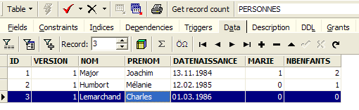
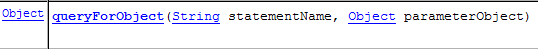
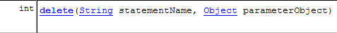
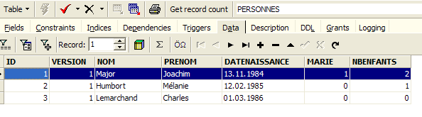
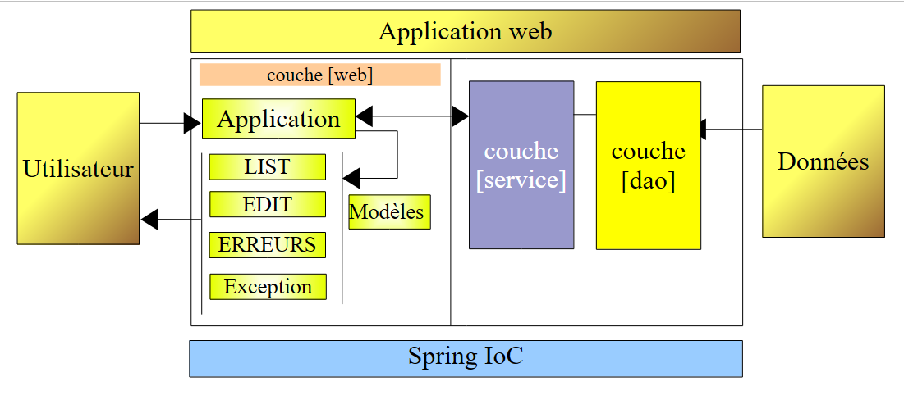
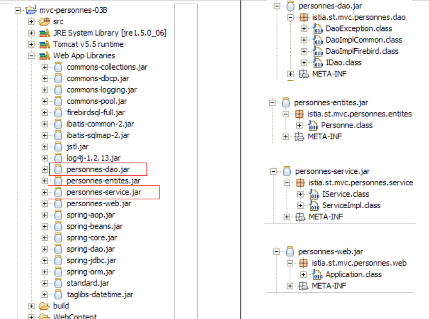
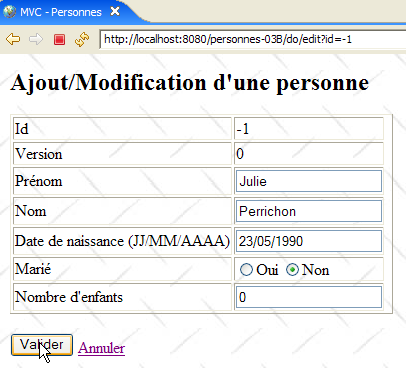
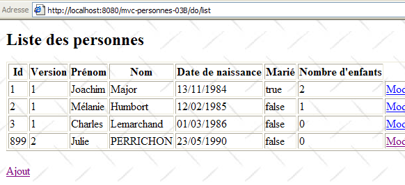

17. Webapplicatie MVC in een 3-tier-architectuur – Voorbeeld 3 – Firebird-database
17.1. De Firebird-database
In deze nieuwe versie gaan we de lijst met personen in een tabel van de Firebird-database opslaan. In het document [http://tahe.developpez.com/divers/sql-firebird/] vindt u informatie over het installeren en beheren van deze SGBD. De onderstaande schermafbeeldingen zijn afkomstig uit IBExpert, een beheerclient voor de Interbase- en Firebird-databases.
De database heet [dbpersonnes.gdb]. Deze bevat een tabel [PERSONNES]:

De tabel [PERSONNES] bevat de lijst met personen die door de webapplicatie worden beheerd. Deze is opgebouwd met de volgende SQL-opdrachten:
- regels 2-10: de structuur van de tabel [PERSONNES], bedoeld voor het opslaan van objecten van het type [Personne], weerspiegelt de structuur van dit object. Aangezien het booleaanse type niet bestaat in Firebird, is het veld [MARIE] (regel 8) gedeclareerd als type [SMALLINT], een geheel getal. De waarde ervan zal 0 (ongehuwd) of 1 (gehuwd) zijn.
- regels 13-16: integriteitsbeperkingen die overeenkomen met die van de gegevensvalidator [ValidatePersonne].
- regel 19: het veld ID is de primaire sleutel van de tabel [PERSONNES]
De tabel [PERSONNES] zou de volgende inhoud kunnen hebben:

De database [dbpersonnes.gdb] bevat, naast de tabel [PERSONNES], een object dat een generator wordt genoemd en de naam [GEN_PERSONNES_ID] draagt. Deze generator levert opeenvolgende gehele getallen die we zullen gebruiken om de primaire sleutel [ID] van de klasse [PERSONNES] een waarde te geven. Laten we een voorbeeld nemen om de werking ervan te illustreren:
 |
 |
We zien dat de waarde van de generator [GEN_PERSONNES_ID] is veranderd (dubbelklik erop + F5 om te vernieuwen):
De volgorde SQL
Hierdoor krijgen we de volgende waarde van de generator [GEN_PERSONNES_ID]. GEN_ID is een interne functie van Firebird en [RDB$DATABASE] is een systeemtabel van deze SGBD.
17.2. Het Eclipse-project van de lagen [dao] en [service]
Om de lagen [dao] en [service] van onze databaseapplicatie te ontwikkelen, gebruiken we het volgende Eclipse-project [mvc-personnes-03]:

Het project is een eenvoudig Java-project, geen Tomcat-webproject. Ter herinnering: versie 2 van onze applicatie zal gebruikmaken van de laag [web] uit versie 1. Deze laag hoeft dus niet opnieuw te worden geschreven.
Map [src]
Deze map bevat de broncode van de lagen [dao] en [service]:

Hierin bevinden zich verschillende pakketten:
- [istia.st.mvc.personnes.dao]: bevat de laag [dao]
- [istia.st.mvc.personnes.entites]: bevat de klasse [Personne]
- [istia.st.mvc.personnes.service]: bevat de klasse [service]
- [istia.st.mvc.personnes.tests]: bevat de tests JUnit van de lagen [dao] en [service]
evenals configuratiebestanden die in de map ClassPath van de applicatie moeten staan.
Map [database]
Deze map bevat de Firebird-database met personen:

- [dbpersonnes.gdb] is de database.
- [dbpersonnes.sql] is het script SQL voor het genereren van de database:
Map [lib]
Deze map bevat de bestanden die nodig zijn voor de toepassing:
 |
Opvallend is de aanwezigheid van het stuurprogramma JDBC [firebirdsql-full.jar] van de SGBD Firebird, evenals een aantal archiefbestanden met de naam [spring-*.jar]. We hadden ook het enige archief [spring.jar] kunnen gebruiken dat zich in de map [dist] van de distributie bevindt en dat alle Spring-klassen bevat. We kunnen ook alleen de archieven gebruiken die nodig zijn voor het project. Dat hebben we hier gedaan door ons te laten leiden door de foutenmeldingen van Eclipse over ontbrekende klassen en de namen van de gedeeltelijke Spring-archieven. Al deze archieven uit de map [lib] zijn in de map Classpath van het project geplaatst.
Map [dist]
Deze map bevat de archieven die voortkomen uit de compilatie van de klassen van de applicatie:

- [personnes-dao.jar]: archief van de laag [dao]
- [personnes-service.jar]: archief van de laag [service]
17.3. De laag [dao]
17.3.1. De componenten van de laag [dao]
De laag [dao] bestaat uit de volgende klassen en interfaces:

- [IDao] is de interface die wordt aangeboden door de laag [dao]
- [DaoImplCommon] is een implementatie hiervan waarbij de groep personen zich in een databasetabel bevindt. [DaoImplCommon] bundelt functionaliteiten die onafhankelijk zijn van SGBD.
- [DaoImplFirebird] is een klasse die is afgeleid van [DaoImplCommon] om specifiek een Firebird-database te beheren.
- [DaoException] is het type van de ongecontroleerde uitzonderingen die door de laag [dao] worden gegenereerd. Deze klasse is die van versie 1.
De interface [IDao] is als volgt:
- De interface heeft dezelfde vier methoden als in de vorige versie.
De klasse [DaoImplCommon] die deze interface implementeert, ziet er als volgt uit:
- regels 8-9: de klasse [DaoImpl] implementeert de interface [IDao] en dus de vier methoden [getAll, getOne, saveOne, deleteOne].
- regels 27-37: de methode [saveOne] maakt gebruik van twee interne methoden, [insertPersonne] en [updatePersonne], afhankelijk van of er een persoon moet worden toegevoegd of gewijzigd.
- regel 50: de privémethode [check] is die uit de vorige versie. We zullen hier niet op terugkomen.
- regel 8: om de interface [IDao] te implementeren, is de klasse [DaoImpl] afgeleid van de Spring-klasse [SqlMapClientDaoSupport].
17.3.2. De gegevenslaag [iBATIS]
De Spring-klasse [SqlMapClientDaoSupport] maakt gebruik van een framework van een derde partij, [Ibatis SqlMap], dat beschikbaar is via de URL [http://ibatis.apache.org/]:

[iBATIS] is een Apache-project dat het bouwen van databasegestuurde lagen [dao] vergemakkelijkt. Met [iBATIS] is de architectuur van de gegevenslaag als volgt:
 |
[iBATIS] bevindt zich tussen de [dao]-laag van de applicatie en de JDBC-driver van de database. Er bestaan alternatieven voor [iBATIS], zoals bijvoorbeeld het alternatief [Hibernate]:

 |
Voor het gebruik van het framework [iBATIS] zijn twee [ibatis-common, ibatis-sqlmap]-archieven nodig, die beide in de map [lib] van het project zijn geplaatst:
 |
De klasse [SqlMapClientDaoSupport] omvat het generieke deel van het gebruik van het framework [iBATIS] en c.a.d. de codegedeelten die in alle lagen [dao] voorkomen en die gebruikmaken van de tool [iBATIS]. Om het niet-generieke deel van de code te schrijven, dat wil zeggen het deel dat specifiek is voor de laag [dao], volstaat het om de klasse [SqlMapClientDaoSupport] af te leiden. Dat is wat we hier doen.
De klasse [SqlMapClientDaoSupport] is als volgt gedefinieerd:

Een van de methoden van deze klasse maakt het mogelijk om de client [iBATIS] te configureren waarmee we de database gaan gebruiken:

Het object [SqlMapClient sqlMapClient] is het object [IBATIS] dat wordt gebruikt om toegang te krijgen tot een database. Op zichzelf implementeert het de laag [iBATIS] van onze architectuur:
 |
Een typische reeks acties met dit object is als volgt:
- een verbinding aanvragen bij een verbindingspool
- een transactie openen
- een reeks SQL-opdrachten uitvoeren die in een configuratiebestand zijn opgeslagen
- de transactie afsluiten
- de verbinding teruggeven aan de pool
Als onze implementatie [DaoImplCommon] rechtstreeks met [iBATIS] zou werken, zou deze deze reeks herhaaldelijk moeten uitvoeren. Alleen bewerking 3 is specifiek voor een [dao]-laag; de overige bewerkingen zijn generiek. De Spring-klasse [SqlMapClientDaoSupport] voert zelf de bewerkingen 1, 2, 4 en 5 uit en delegeert bewerking 3 aan haar afgeleide klasse, in dit geval de klasse [DaoImplCommon].
Om te kunnen functioneren, heeft de klasse [SqlMapClientDaoSupport] een verwijzing nodig naar het object iBATIS [SqlMapClient sqlMapClient], dat de communicatie met de database verzorgt. Dit object heeft twee dingen nodig om te functioneren:
- een object [DataSource] dat is verbonden met de database en waaraan het verbindingen zal aanvragen
- een (of meerdere) configuratiebestanden waarin de uit te voeren SQL-opdrachten zijn ondergebracht. Deze staan namelijk niet in de Java-code. Ze worden geïdentificeerd door een code in een configuratiebestand en het object [SqlMapClient sqlMapClient] gebruikt deze code om een specifieke SQL-opdracht uit te voeren.
Een eerste configuratieschets van onze laag [dao] die de bovenstaande architectuur zou weerspiegelen, zou er als volgt uitzien:
<!-- de toegangsklassen tot de laag [dao] -->
<bean id="dao" class="istia.st.mvc.personnes.dao.DaoImplCommon">
<property name="sqlMapClient">
<ref local="sqlMapClient"/>
</property>
</bean>
Hier wordt de eigenschap [sqlMapClient] (regel 3) van de klasse [DaoImplCommon] (regel 2) geïnitialiseerd. Dit gebeurt via de methode [setSqlMapClient] van de klasse [DaoImpl]. Deze klasse heeft deze methode niet. Het is de bovenliggende klasse [SqlMapClientDaoSupport] die deze methode heeft. Het is dus deze klasse die hier in feite wordt geïnitialiseerd.
Nu, in regel 4, wordt verwezen naar een object met de naam „sqlMapClient“ dat nog moet worden aangemaakt. Zoals gezegd is dit van het type [SqlMapClient], een type [iBATIS]:

[SqlMapClient] is een interface. Spring biedt de klasse [SqlMapClientFactoryBean] om een object te verkrijgen dat deze interface implementeert:

Ter herinnering: we willen een object instantiëren dat de interface [SqlMapClient] implementeert. Dit lijkt niet het geval te zijn voor de klasse [SqlMapClientFactoryBean]. Deze implementeert de interface [FactoryBean] (zie hierboven). Deze heeft de volgende methode [getObject()]:

Wanneer Spring wordt gevraagd om een instantie van een object dat de interface [FactoryBean] implementeert, doet het het volgende:
- een instantie van de klasse [I] aanmaken – in dit geval maakt het een instantie van het type [SqlMapClientFactoryBean] aan.
- geeft aan de aanroepende methode het resultaat van de methode [I].getObject() terug – de methode [SqlMapClientFactoryBean].getObject() zal hier een object retourneren dat de interface [SqlMapClient] implementeert.
Om een object te kunnen retourneren dat de interface [SqlMapClient] implementeert, heeft de klasse [SqlMapClientFactoryBean] twee gegevens nodig die voor dit object vereist zijn:
- een [DataSource]-object dat verbonden is met de database en waaraan het verbindingen zal aanvragen
- een (of meerdere) configuratiebestanden waarin de uit te voeren SQL-opdrachten zijn vastgelegd
De klasse [SqlMapClientFactoryBean] beschikt over set-methoden om deze twee eigenschappen te initialiseren:

We boeken vooruitgang... Ons configuratiebestand krijgt steeds meer vorm en ziet er nu als volgt uit:
<!-- SqlMapCllient -->
<bean id="sqlMapClient"
class="org.springframework.orm.ibatis.SqlMapClientFactoryBean">
<property name="dataSource">
<ref local="dataSource"/>
</property>
<property name="configLocation">
<value>classpath:sql-map-config-firebird.xml</value>
</property>
</bean>
<!-- de toegangsclassen voor de laag [dao] -->
<bean id="dao" class="istia.st.mvc.personnes.dao.DaoImplCommon">
<property name="sqlMapClient">
<ref local="sqlMapClient"/>
</property>
</bean>
- regels 2-3: de bean "sqlMapClient" is van het type [SqlMapClientFactoryBean]. Uit hetgeen zojuist is uitgelegd, weten we dat wanneer we Spring om een instantie van deze bean vragen, we een object krijgen dat de interface iBATIS [SqlMapClient] implementeert. Het is dus dit laatste object dat in regel 14 wordt verkregen.
- regels 7-9: we geven aan dat het configuratiebestand dat nodig is voor het object iBATIS [SqlMapClient] „sql-map-config-firebird.xml“ heet en dat het moet worden opgezocht in de ClassPath van de applicatie. Hier wordt de methode [SqlMapClientFactoryBean].setConfigLocation gebruikt.
- regels 4-6: we initialiseren de eigenschap [dataSource] van [SqlMapClientFactoryBean] met de bijbehorende methode [setDataSource].
In regel 5 verwijzen we naar een bean met de naam "dataSource", die nog moet worden aangemaakt. Als we kijken naar de parameter die de methode [setDataSource] van [SqlMapClientFactoryBean] verwacht, zien we dat deze van het type [DataSource] is:

We hebben opnieuw te maken met een interface waarvoor we een implementatieklasse moeten vinden. De rol van een dergelijke klasse is om een applicatie op een efficiënte manier verbindingen met een specifieke database te verschaffen. Een SGBD kan niet tegelijkertijd een groot aantal verbindingen openhouden. Om het aantal open verbindingen op een bepaald moment te verminderen, moeten we bij elke uitwisseling met de database:
- een verbinding openen
- een transactie starten
- SQL-opdrachten verzenden
- de transactie afsluiten
- de verbinding te sluiten
Het herhaaldelijk openen en sluiten van verbindingen kost veel tijd. Om deze twee problemen op te lossen (zowel het aantal openstaande verbindingen op een bepaald moment beperken als de kosten voor het openen en sluiten ervan beperken), gaan klassen die de interface [DataSource] implementeren vaak als volgt te werk:
- ze openen bij het instantiëren N verbindingen met de betreffende database. N heeft doorgaans een standaardwaarde en kan meestal in een configuratiebestand worden gedefinieerd. Deze N verbindingen blijven de hele tijd open en vormen een pool van verbindingen die beschikbaar zijn voor de threads van de applicatie.
- Wanneer een thread van de applicatie vraagt om een verbinding te openen, wijst het object [DataSource] hem een van de N verbindingen toe die bij het opstarten zijn geopend, mits er nog beschikbare zijn. Wanneer de applicatie de verbinding sluit, wordt deze in werkelijkheid niet gesloten, maar gewoon teruggeplaatst in de pool van beschikbare verbindingen.
Er zijn verschillende implementaties van de interface [DataSource] vrij beschikbaar. We zullen hier de implementatie [commons DBCP] gebruiken, die beschikbaar is via de url [http://jakarta.apache.org/commons/dbcp/]:

Voor het gebruik van de tool [commons DBCP] zijn twee archieven [commons-dbcp, commons-pool] nodig, die beide in de map [lib] van het project zijn geplaatst:
 |
De klasse [BasicDataSource] van [commons DBCP] biedt de implementatie [DataSource] die we nodig hebben:

Deze klasse biedt ons een verbindingspool om toegang te krijgen tot de Firebird-database [dbpersonnes.gdb] van onze applicatie. Hiervoor moeten we de klasse de informatie verstrekken die nodig is om de verbindingen in de pool aan te maken:
- de naam van de te gebruiken driver – geïnitialiseerd met [setDriverClassName]
- de naam van de URL van de te gebruiken database – geïnitialiseerd met [setUrl]
- de gebruikersnaam van de eigenaar van de verbinding – standaard ingesteld op [setUsername] (en niet op setUserName zoals men zou verwachten)
- zijn wachtwoord – geïnitialiseerd met [setPassword]
Het configuratiebestand van onze laag [dao] zou er als volgt uit kunnen zien:
<?xml version="1.0" encoding="ISO_8859-1"?>
<!DOCTYPE beans SYSTEM "http://www.springframework.org/dtd/spring-beans.dtd">
<beans>
<!-- de gegevensbron DBCP -->
<bean id="dataSource" class="org.apache.commons.dbcp.BasicDataSource"
destroy-method="close">
<property name="driverClassName">
<value>org.firebirdsql.jdbc.FBDriver</value>
</property>
<!-- let op: laat geen spaties tussen de twee <value>-tags van de URL -->
<property name="url">
<value>jdbc:firebirdsql:localhost/3050:C:/data/2005-2006/eclipse/dvp-eclipse-tomcat/mvc-personnes-03/database/dbpersonnes.gdb</value>
</property>
<property name="username">
<value>sysdba</value>
</property>
<property name="password">
<value>masterkey</value>
</property>
</bean>
<!-- SqlMapCllient -->
<bean id="sqlMapClient"
class="org.springframework.orm.ibatis.SqlMapClientFactoryBean">
<property name="dataSource">
<ref local="dataSource"/>
</property>
<property name="configLocation">
<value>classpath:sql-map-config-firebird.xml</value>
</property>
</bean>
<!-- de toegangsklasse tot de laag [dao] -->
<bean id="dao" class="istia.st.mvc.personnes.dao.DaoImplCommon">
<property name="sqlMapClient">
<ref local="sqlMapClient"/>
</property>
</bean>
</beans>
- regels 7-9: de naam van de driver JDBC van de Firebird SGBD
- regels 11-13: de URL van de Firebird-database [dbpersonnes.gdb]. Let hier vooral goed op de schrijfwijze. Er mag geen spatie staan tussen de <value>-tags en de URL.
- regels 14-16: de eigenaar van de verbinding – in dit geval [sysdba], de standaardbeheerder van Firebird-distributies
- regels 17-19: zijn wachtwoord [masterkey] – eveneens de standaardwaarde
We zijn al een heel eind op weg, maar er zijn nog enkele configuratiepunten die moeten worden opgehelderd: regel 28 verwijst naar het bestand [sql-map-config-firebird.xml], dat de client [SqlMapClient] van iBATIS moet configureren. Voordat we de inhoud ervan bekijken, laten we eerst zien waar deze configuratiebestanden zich in ons Eclipse-project bevinden:

- [spring-config-test-dao-firebird.xml] is het configuratiebestand van de laag [dao] die we zojuist hebben bekeken
- [sql-map-config-firebird.xml] wordt doorverwezen door [spring-config-test-dao-firebird.xml]. We gaan dit bekijken.
- [personnes-firebird.xml] wordt doorverwezen door [sql-map-config-firebird.xml]. We gaan dit bestuderen.
De drie voorgaande bestanden bevinden zich in de map [src]. In Eclipse betekent dit dat ze tijdens de uitvoering aanwezig zullen zijn in de map [bin] van het project (hierboven niet weergegeven). Deze map maakt deel uit van ClassPath van de applicatie. Uiteindelijk zullen de drie voorgaande bestanden dus wel degelijk aanwezig zijn in de map ClassPath van de applicatie. Dit is noodzakelijk.
Het bestand [sql-map-config-firebird.xml] is als volgt:
<?xml version="1.0" encoding="UTF-8" ?>
<!DOCTYPE sqlMapConfig
PUBLIC "-//iBATIS.com//DTD SQL Map Config 2.0//EN"
"http://www.ibatis.com/dtd/sql-map-config-2.dtd">
<sqlMapConfig>
<sqlMap resource="personnes-firebird.xml"/>
</sqlMapConfig>
- dit bestand moet <sqlMapConfig> als root-tag hebben (regels 6 en 8)
- regel 7: de tag <sqlMap> wordt gebruikt om de bestanden aan te duiden die de uit te voeren opdrachten SQL bevatten. Vaak, maar niet altijd, is er één bestand per tabel. Hierdoor kunnen de SQL-opdrachten voor een bepaalde tabel in één bestand worden gebundeld. Maar vaak komen er SQL-opdrachten voor die betrekking hebben op meerdere tabellen. In dat geval gaat de bovenstaande indeling niet op. Je moet er gewoon rekening mee houden dat alle bestanden die worden aangeduid met de tags <sqlMap> worden samengevoegd. Deze bestanden worden gezocht in het ClassPath-bestand van de applicatie.
Het bestand [personnes-firebird.xml] beschrijft de SQL-opdrachten die zullen worden verzonden naar de tabel [PERSONNES] van de Firebird-database [dbpersonnes.gdb]. De inhoud ervan is als volgt:
<?xml version="1.0" encoding="UTF-8" ?>
<!DOCTYPE sqlMap
PUBLIC "-//iBATIS.com//DTD SQL Map 2.0//EN"
"http://www.ibatis.com/dtd/sql-map-2.dtd">
<sqlMap>
<!-- aliasklasse [Personne] -->
<typeAlias alias="Personne.classe"
type="istia.st.mvc.personnes.entites.Personne"/>
<!-- toewijzingstabel [PERSONNES] - object [Personne] -->
<resultMap id="Personne.map"
class="Personne.classe">
<result property="id" column="ID" />
<result property="version" column="VERSION" />
<result property="nom" column="NOM"/>
<result property="prenom" column="PRENOM"/>
<result property="dateNaissance" column="DATENAISSANCE"/>
<result property="marie" column="MARIE"/>
<result property="nbEnfants" column="NBENFANTS"/>
</resultMap>
<!-- lijst van alle personen -->
<select id="Personne.getAll" resultMap="Personne.map" > select ID, VERSION, NOM,
PRENOM, DATENAISSANCE, MARIE, NBENFANTS FROM PERSONNES</select>
<!-- een specifieke persoon ophalen -->
<select id="Personne.getOne" resultMap="Personne.map" >select ID, VERSION, NOM,
PRENOM, DATENAISSANCE, MARIE, NBENFANTS FROM PERSONNES WHERE ID=#waarde#</select>
<!-- een persoon toevoegen -->
<insert id="Personne.insertOne" parameterClass="Personne.classe">
<selectKey keyProperty="id">
SELECT GEN_ID(GEN_PERSONNES_ID,1) as "value" FROM RDB$$DATABASE
</selectKey>
insert into
PERSONNES(ID, VERSION, NOM, PRENOM, DATENAISSANCE, MARIE, NBENFANTS)
VALUES(#id#, #versie#, #achternaam#, #voornaam#, #dateNaissance#, #getrouwd#,
#nbEnfants#) </insert>
<!-- een persoon bijwerken -->
<update id="Personne.updateOne" parameterClass="Personne.classe"> update
PERSONNES set VERSION=#versie#+1, NOM=#achternaam#, PRENOM=#voornaam#, DATENAISSANCE=#dateNaissance#,
MARIE=#Marie#, NBENFANTS=#nbEnfants# WHERE ID=#id# en
VERSION=#versie#</update>
<!-- een persoon verwijderen -->
<delete id="Personne.deleteOne" parameterClass="int"> delete FROM PERSONNES WHERE
ID=#waarde# </delete>
</sqlMap>
- het bestand moet <sqlMap> als root-tag hebben (regels 7 en 45)
- regels 9-10: om het schrijven van het bestand te vergemakkelijken, wordt de alias (synoniem) [Personne.classe] toegekend aan de klasse [istia.st.springmvc.personnes.entites.Personne].
- regels 12-21: hiermee worden de koppelingen tussen de kolommen van de tabel [PERSONNES] en de velden van het object [Personne] vastgelegd.
- regels 23-24: de volgorde SQL [select] om alle personen uit de tabel [PERSONNES] op te halen
- regels 26-27: de opdracht SQL [select] om een specifieke persoon uit de tabel [PERSONNES] op te halen
- regels 29-36: de opdracht SQL [insert] waarmee een persoon wordt ingevoegd in de tabel [PERSONNES]
- regels 38-41: de opdracht SQL [update] waarmee een persoon in de tabel [PERSONNES] wordt bijgewerkt
- regels 42-44: de opdracht SQL [delete] waarmee een persoon uit de tabel [PERSONNES] wordt verwijderd
De rol en betekenis van de inhoud van het bestand [personnes-firebird.xml] worden toegelicht aan de hand van de klasse [DaoImplCommon], die de laag [dao] implementeert.
17.3.3. De klasse [DaoImplCommon]
Laten we nog eens terugkomen op de architectuur voor gegevenstoegang:
 |
De klasse [DaoImplCommon] ziet er als volgt uit:
We gaan de methoden een voor een bekijken.
getAll
Met deze methode kun je alle personen uit de lijst ophalen. De code is als volgt:
Laten we eerst even in herinnering brengen dat de klasse [DaoImplCommon] is afgeleid van de Spring-klasse [SqlMapClientDaoSupport]. Deze klasse bevat de methode [getSqlMapClientTemplate()] die hierboven in regel 3 wordt gebruikt. Deze methode heeft de volgende signatuur:

Het type [SqlMapClientTemplate] kapselt het object [SqlMapClient] van de laag [iBATIS] in. Hiermee krijgen we toegang tot de database. Het type [iBATIS] SqlMapClient zou direct kunnen worden gebruikt, aangezien de klasse [SqlMapClientDaoSupport] er toegang toe heeft:

Het nadeel van de klasse [iBATIS] SqlMapClient is dat deze uitzonderingen van het type [SQLException] genereert, een gecontroleerd uitzonderingstype, c.a.d. Deze uitzondering moet worden afgehandeld door een try/catch-blok of worden gedeclareerd in de signatuur van de methoden die deze uitzondering genereren. Laten we echter niet vergeten dat de laag [dao] een interface [IDao] implementeert waarvan de methoden geen uitzonderingen in hun signaturen bevatten. De methoden van de klassen die de interface [IDao] implementeren, mogen dus evenmin uitzonderingen in hun signaturen bevatten. We moeten dus elke uitzondering van het type [SQLException] die door de laag [iBATIS] wordt gegenereerd, opvangen en deze in een ongecontroleerde uitzondering inkapselen. Het type [DaoException] uit ons project zou geschikt zijn voor deze inkapseling.
In plaats van deze uitzonderingen zelf af te handelen, gaan we ze toevertrouwen aan het Spring-type [SqlMapClientTemplate], dat het object [SqlMapClient] van de laag [iBATIS] inkapselen. [SqlMapClientTemplate] is namelijk ontworpen om de uitzonderingen [SQLException], die door de laag [SqlMapClient] worden gegenereerd, op te vangen en deze in te kapselen in een ongecontroleerd type [DataAccessException] . Dit gedrag komt ons goed uit. We moeten er alleen rekening mee houden dat de laag [dao] voortaan twee soorten ongecontroleerde uitzonderingen kan genereren:
- ons eigen type [DaoException]
- het Spring-type [DataAccessException]
Het type [SqlMapClientTemplate] is als volgt gedefinieerd:

Het implementeert de volgende interface [SqlMapClientOperations]:

Deze interface definieert methoden waarmee de inhoud van het bestand [personnes-firebird.xml] kan worden verwerkt:
[queryForList]

Met deze methode kan een opdracht [SELECT] worden verzonden en kan het resultaat ervan worden opgehaald in de vorm van een lijst met objecten:
- [statementName]: de identificatiecode (id) van de opdracht [select] in het configuratiebestand
- [parameterObject]: het „parameter”-object voor een geconfigureerde [select]. Het „parameter”-object kan twee vormen aannemen:
- een object dat voldoet aan de Javabean-standaard: de parameters van de opdracht [select] zijn dan de namen van de velden van de Javabean. Bij de uitvoering van de opdracht [select] worden deze vervangen door de waarden van deze velden.
- een woordenboek: de parameters van de opdracht [select] zijn dan de sleutels van het woordenboek. Bij de uitvoering van de opdracht [select] worden deze vervangen door de bijbehorende waarden in het woordenboek.
- Als [SELECT] geen rijen oplevert, is het resultaat [List] een object zonder elementen, maar null niet (te controleren).
[queryForObject]

Deze methode is in principe identiek aan de vorige, maar levert slechts één enkel object op. Als [SELECT] geen regels oplevert, is het resultaat de pointer null.
[insert]

Met deze methode kan een opdracht SQL [insert] worden uitgevoerd, geconfigureerd door de tweede parameter. Het geretourneerde object is de primaire sleutel van de rij die is ingevoegd. Het is niet verplicht om dit resultaat te gebruiken.
[update]

Met deze methode kan een opdracht SQL [update] worden uitgevoerd, ingesteld door de tweede parameter. Het resultaat is het aantal rijen dat is gewijzigd door de opdracht SQL [update].
[delete]

Met deze methode kan een opdracht SQL [delete] worden uitgevoerd, zoals gedefinieerd door de tweede parameter. Het resultaat is het aantal regels dat door de opdracht SQL [delete] is verwijderd.
Laten we teruggaan naar de methode [getAll] van de klasse [DaoImplCommon]:
- regel 4: de opdracht [select] met de naam "Personne.getAll" wordt uitgevoerd. Deze is niet geconfigureerd en daarom is het "parameter"-object null.
In [personnes-firebird.xml] is de opdracht [select] met de naam "Personne.getAll" als volgt:
<?xml version="1.0" encoding="UTF-8" ?>
<!DOCTYPE sqlMap
PUBLIC "-//iBATIS.com//DTD SQL Map 2.0//EN"
"http://www.ibatis.com/dtd/sql-map-2.dtd">
<sqlMap>
<!-- aliasklasse [Personne] -->
<typeAlias alias="Personne.classe"
type="istia.st.mvc.personnes.entites.Personne"/>
<!-- toewijzingstabel [PERSONNES] - object [Personne] -->
<resultMap id="Personne.map"
class="Personne.classe">
<result property="id" column="ID" />
<result property="version" column="VERSION" />
<result property="nom" column="NOM"/>
<result property="prenom" column="PRENOM"/>
<result property="dateNaissance" column="DATENAISSANCE"/>
<result property="marie" column="MARIE"/>
<result property="nbEnfants" column="NBENFANTS"/>
</resultMap>
<!-- lijst van alle personen -->
<select id="Personne.getAll" resultMap="Personne.map" > select ID, VERSION, NOM,
PRENOM, DATENAISSANCE, MARIE, NBENFANTS FROM PERSONNES</select>
...
</sqlMap>
- regel 23: de opdracht SQL „Personne.getAll“ is niet geparametriseerd (er zijn geen parameters in de tekst van de aanvraag).
- regel 3 van de methode [getAll] vraagt om de uitvoering van de query [select], genaamd "Personne.getAll". Deze zal worden uitgevoerd. [iBATIS] is gebaseerd op JDBC. We weten dus dat het resultaat van de query zal worden verkregen in de vorm van een [ResultSet]-object. Regel 23: het attribuut [resultMap] van de tag <select> geeft aan [iBATIS] aan welk " resultMap " het moet gebruiken om elke regel van het verkregen [ResultSet]-object om te zetten. Dit is de " resultMap " [Personne.map], gedefinieerd in de regels 12-21, die aangeeft hoe een regel uit de tabel [PERSONNES] moet worden omgezet naar een object van het type [Personne]. [iBATIS] gebruikt deze koppelingen om een lijst met [Personne]-objecten te genereren op basis van de rijen van het [ResultSet]-object.
- regel 3 van de methode [getAll] retourneert vervolgens een verzameling [Personne]-objecten
- De methode [queryForList] kan een Spring-uitzondering [DataAccessException] genereren. We laten deze doorgaan.
We zullen de overige methoden van de klasse [AbstractDaoImpl] kort toelichten, aangezien het belangrijkste over het gebruik van [iBATIS] al aan bod is gekomen bij de bespreking van de methode [getAll].
getOne
Met deze methode kun je een persoon opzoeken aan de hand van zijn of haar [id]. De code is als volgt:
- regel 4: vraagt om de uitvoering van de opdracht [select] met de naam "Personne.getOne". Deze is als volgt in het bestand [personnes-firebird.xml]:
<!-- een specifieke persoon ophalen -->
<select id="Personne.getOne" resultMap="Personne.map" parameterClass="int">
select ID, VERSION, NOM, PRENOM, DATENAISSANCE, MARIE, NBENFANTS FROM
PERSONNES WHERE ID=#waarde#</select>
De opdracht SQL wordt ingesteld door de parameter #value# (regel 4). Het attribuut #value# geeft de waarde aan van de parameter die wordt doorgegeven aan de opdracht SQL, wanneer deze parameter van het type ‘enkelvoudig’ is: Integer, Double, String, ... In de attributen van de tag <select> geeft het attribuut [parameterClass] aan dat de parameter van het type ‘geheel getal’ is (regel 2). Op regel 5 van [getOne] zien we dat deze parameter de identificatiecode is van de gezochte persoon in de vorm van een object Integer. Deze typewijziging is verplicht, aangezien de tweede parameter van [queryForList] van het type [Object] moet zijn.
Het resultaat van de query [select] moet via het attribuut [resultMap="Personne.map"] (regel 2) worden omgezet in een object. We krijgen dan het type [Personne].
- regels 7-11: als de query [select] geen regels heeft opgeleverd, wordt de pointer null uit regel 4 opgehaald. Dit betekent dat de gezochte persoon niet is gevonden. In dat geval wordt een [DaoException] met code 2 gestart (regels 9-10).
- regel 13: als er geen uitzondering is opgetreden, wordt het gevraagde object [Personne] teruggegeven.
deleteOne
Met deze methode kan een persoon worden verwijderd die wordt geïdentificeerd aan de hand van zijn [id]. De code hiervoor is:
- regels 4-5: vraagt om uitvoering van de opdracht [delete] met de naam „Personne.deleteOne“. Deze staat als volgt in het bestand [personnes-firebird.xml]:
<!-- een persoon verwijderen -->
<delete id="Personne.deleteOne" parameterClass="int"> delete FROM PERSONNES WHERE
ID=#waarde# </delete>
De opdracht SQL wordt ingesteld door de parameter #value# (regel 3) van het type [parameterClass="int"] (regel 2). Dit is de identificatiecode van de gezochte persoon (regel 5 van deleteOne)
- regel 4: het resultaat van de methode [SqlMapClientTemplate].delete is het aantal verwijderde regels.
- regels 7-8: als de query [delete] geen regels heeft verwijderd, betekent dit dat de persoon niet bestaat. Er wordt een [DaoException] met code 2 gestart (regel 8).
saveOne
Met deze methode kan een nieuwe persoon worden toegevoegd of een bestaande persoon worden gewijzigd. De code is als volgt:
- regel 4: we controleren de geldigheid van de persoon met de methode [check]. Deze methode bestond al in de vorige versie en was toen uitgecommentarieerd. Ze roept een [DaoException] aan als de persoon ongeldig is. We laten deze doorlopen.
- regel 6: als we hier terechtkomen, betekent dit dat er geen uitzondering is opgetreden. De persoon is dus geldig.
- regels 6-11: afhankelijk van de id van de persoon gaat het om een toevoeging (id = -1) of een update (id ≠ -1). In beide gevallen worden twee interne methoden van de klasse aangeroepen:
- insertPersonne: voor het toevoegen
- updatePersonne: voor de bijwerking
insertPersonne
Met deze methode kan een nieuwe persoon worden toegevoegd. De code ervan is als volgt:
- regel 4: het versienummer van de persoon die u aan het aanmaken bent, wordt op 1 gezet
- regel 9: voer de invoeging uit via de query met de naam "Personne.insertOne", die als volgt luidt:
<insert id="Personne.insertOne" parameterClass="Personne.classe">
<selectKey keyProperty="id">
SELECT GEN_ID(GEN_PERSONNES_ID,1) as "value" FROM RDB$$DATABASE
</selectKey>
insert into
PERSONNES(ID, VERSION, NOM, PRENOM, DATENAISSANCE, MARIE, NBENFANTS)
VALUES(#id#, #versie#, #achternaam#, #voornaam#, #dateNaissance#, #getrouwd#,
#nbEnfants#) </insert>
Dit is een query met parameters en de parameter is van het type [Personne] (parameterClass="Personne.classe", regel 1). De velden van het object [Personne] die als parameter worden doorgegeven (regel 9 van insertPersonne) worden gebruikt om de kolommen in te vullen van de rij die in de tabel [PERSONNES] wordt ingevoegd (regels 5-8). Er is een probleem dat moet worden opgelost. Bij een invoeging heeft het in te voegen object [Personne] een id gelijk aan -1. Deze waarde moet worden vervangen door een geldige primaire sleutel. Hiervoor worden de regels 2-4 van de bovenstaande tag <selectKey> gebruikt. Deze geven aan:
- (vervolg)
- de query SQL die moet worden uitgevoerd om een primaire sleutelwaarde te verkrijgen. De hier aangegeven query is dezelfde als die we in paragraaf 17.1 hebben gepresenteerd. Er zijn twee punten waar je op moet letten:
- "as 'value'" is verplicht. Men kan ook "as value" schrijven, maar value is een Firebird-trefwoord dat tussen aanhalingstekens moest worden geplaatst.
- De Firebird-tabel heet in werkelijkheid [RDB$DATABASE]. Maar het teken $ wordt geïnterpreteerd als [iBATIS]. Dit is voorkomen door het teken te verdubbelen.
- het veld van het object [Personne] dat moet worden geïnitialiseerd met de waarde die is opgehaald door de opdracht [SELECT], in dit geval het veld [id]. Het is het attribuut [keyProperty] in regel 2 dat dit veld aangeeft.
- de query SQL die moet worden uitgevoerd om een primaire sleutelwaarde te verkrijgen. De hier aangegeven query is dezelfde als die we in paragraaf 17.1 hebben gepresenteerd. Er zijn twee punten waar je op moet letten:
- regels 6-7: voor testdoeleinden zullen we 10 ms moeten wachten voordat we de invoeging uitvoeren, om te zien of er conflicten zijn tussen threads die tegelijkertijd toevoegingen zouden willen doen.
updatePersonne
Met deze methode kan een persoon die al in de tabel [PERSONNES] voorkomt, worden gewijzigd. De code ervan is als volgt:
- Een update kan om ten minste twee redenen mislukken:
- de persoon die moet worden bijgewerkt, bestaat niet
- de persoon die moet worden bijgewerkt bestaat wel, maar de thread die deze wil wijzigen, heeft niet de juiste versie
- regels 7-8: de query SQL [update] met de naam "Personne.updateOne" wordt uitgevoerd. Deze luidt als volgt:
<!-- een persoon bijwerken -->
<update id="Personne.updateOne" parameterClass="Personne.classe"> update
PERSONNES set VERSION=#versie#+1, NOM=#achternaam#, PRENOM=#voornaam#, DATENAISSANCE=#dateNaissance#,
MARIE=#Marie#, NBENFANTS=#nbEnfants# WHERE ID=#id# en
VERSION=#versie#</update>
- (vervolg)
- regel 2: de query is geconfigureerd en accepteert als parameter een type [Personne] (parameterClass="Personne.classe"). Dit is de persoon die moet worden gewijzigd (regel 8 – updatePersonne).
- We willen alleen de persoon uit de tabel [PERSONNES] wijzigen die hetzelfde nummer [id] en dezelfde versie [version] heeft als de parameter. Daarom hebben we de voorwaarde [WHERE ID=#id# and VERSION=#version#]. Als deze persoon wordt gevonden, wordt deze bijgewerkt met de parameterpersoon en wordt de versie met 1 verhoogd (regel 3 hierboven).
- regel 9: het aantal bijgewerkte regels wordt opgehaald.
- regels 10-11: als dit aantal nul is, wordt een [DaoException] met code 2 gestart, wat aangeeft dat de bij te werken persoon ofwel niet bestaat, ofwel inmiddels van versie is veranderd.
17.4. Tests van de [dao]-laag
17.4.1. Tests van de implementatie van [DaoImplCommon]
Nu we de laag [dao] hebben geschreven, gaan we deze testen met JUnit-tests:

Voordat we intensieve tests uitvoeren, kunnen we beginnen met een eenvoudig programma van het type [main] dat de inhoud van de tabel [PERSONNES] weergeeft. Dit is de klasse [MainTestDaoFirebird]:
Het configuratiebestand [spring-config-test-dao-firebird.xml] van de laag [dao], dat in de regels 13-14 wordt gebruikt, ziet er als volgt uit:
<?xml version="1.0" encoding="ISO_8859-1"?>
<!DOCTYPE beans SYSTEM "http://www.springframework.org/dtd/spring-beans.dtd">
<beans>
<!-- de gegevensbron DBCP -->
<bean id="dataSource" class="org.apache.commons.dbcp.BasicDataSource"
destroy-method="close">
<property name="driverClassName">
<value>org.firebirdsql.jdbc.FBDriver</value>
</property>
<!-- let op: laat geen spaties tussen de twee <value>-tags -->
<property name="url">
<value>jdbc:firebirdsql:localhost/3050:C:/data/2005-2006/eclipse/dvp-eclipse-tomcat/mvc-personnes-03/database/dbpersonnes.gdb</value>
</property>
<property name="username">
<value>sysdba</value>
</property>
<property name="password">
<value>masterkey</value>
</property>
</bean>
<!-- SqlMapCllient -->
<bean id="sqlMapClient"
class="org.springframework.orm.ibatis.SqlMapClientFactoryBean">
<property name="dataSource">
<ref local="dataSource"/>
</property>
<property name="configLocation">
<value>classpath:sql-map-config-firebird.xml</value>
</property>
</bean>
<!-- de toegangsklasse tot de laag [dao] -->
<bean id="dao" class="istia.st.mvc.personnes.dao.DaoImplCommon">
<property name="sqlMapClient">
<ref local="sqlMapClient"/>
</property>
</bean>
</beans>
Dit bestand is het bestand dat in paragraaf 17.3.2 wordt besproken.
Voor de test wordt de Firebird-instantie SGBD gestart. De inhoud van de tabel [PERSONNES] is als volgt:

De uitvoering van het programma [MainTestDaoFirebird] levert de volgende schermresultaten op:

We hebben inderdaad de lijst met personen verkregen. We kunnen nu doorgaan naar de test JUnit.
De test JUnit [TestDaoFirebird] is als volgt:
- De tests [test1] tot en met [test5] zijn hetzelfde als in versie 1, behalve [test4], die enigszins is aangepast. De test [test6] is nieuw. We geven alleen commentaar op deze twee tests.
[test4]
[test4] is bedoeld om de methode [updatePersonne - DaoImplCommon] te testen. Hieronder volgt de code daarvan:
- regels 4-5: er wordt 10 ms gewacht. Zo wordt de thread die [updatePersonne] uitvoert gedwongen de processor te verliezen, wat onze kansen kan vergroten om toegangskonflicten tussen concurrerende threads te zien.
[test4] start N=100 threads die tegelijkertijd het aantal kinderen van dezelfde persoon met 1 moeten verhogen. We willen zien hoe versieconflicten en toegangskonflicten worden afgehandeld.
De threads worden aangemaakt in de regels 8-13. Elke thread verhoogt het aantal kinderen van de in de regels 3-5 aangemaakte persoon met 1. De [ThreadDaoMajEnfants ]-threads voor het bijwerken zijn de volgende:
Een update van een persoon kan mislukken omdat de persoon die men wil wijzigen niet bestaat of omdat deze eerder door een andere thread is bijgewerkt. Deze twee gevallen worden hier in de regels 67-69 afgehandeld. In beide gevallen start de methode [updatePersonne] namelijk een [DaoException] met code 2. De thread wordt dan teruggestuurd om de updateprocedure vanaf het begin opnieuw te starten (while-lus, regel 34).
[test6]
[test6] is bedoeld om de methode [insertPersonne - DaoImplCommon] te testen. Hieronder volgt de code daarvan:
- regels 6-7: we wachten 10 ms om de thread die [insertPersonne] uitvoert te dwingen de processor te verliezen en zo onze kansen te vergroten dat er conflicten ontstaan doordat threads tegelijkertijd invoegingen uitvoeren.
De code van [test6] is als volgt:
We maken 100 threads aan die tegelijkertijd 100 verschillende personen gaan invoeren. Deze 100 threads krijgen allemaal een primaire sleutel voor de persoon die ze moeten invoeren en worden vervolgens gedurende 10 ms onderbroken (regel 10 – insertPersonne) voordat ze hun invoer kunnen uitvoeren. We willen controleren of alles goed verloopt en of ze met name wel verschillende primaire sleutelwaarden krijgen.
- regels 7-11: er wordt een array met 100 personen aangemaakt. Deze personen zijn allemaal kopieën van de persoon p die in regels 4-5 is aangemaakt.
- regels 14-17: de 100 invoegthreads worden gestart. Elk daarvan heeft als taak een van de 100 eerder aangemaakte personen in te voegen.
- regels 19-23: [test6] wacht tot elk van de 100 threads die hij heeft gestart, is voltooid. Zodra hij detecteert dat thread nr. i is voltooid, verwijdert hij de persoon die deze thread zojuist heeft ingevoegd.
De invoegthread [ThreadDaoInsertPersonne] ziet er als volgt uit:
- regels 19-22: de thread-constructor slaat de persoon op die moet worden ingevoegd en de laag [dao] die moet worden gebruikt om deze invoeging uit te voeren.
- regel 30: de persoon wordt ingevoegd. Als er een uitzondering optreedt, wordt deze doorgegeven aan [test6].
Tests
Bij het testen worden de volgende resultaten verkregen:
 |
De test [test4] mislukt dus. Het aantal kinderen is gestegen naar 69 in plaats van de verwachte 100. Wat is er gebeurd? Laten we de schermlogs bekijken. Deze tonen dat er uitzonderingen zijn gegenereerd door Firebird:
Exception in thread "Thread-62" org.springframework.jdbc.UncategorizedSQLException: SqlMapClient operation; uncategorized SQLException for SQL []; SQL state [HY000]; error code [335544336];
--- De fout is opgetreden in personnes-firebird.xml.
--- De fout is opgetreden tijdens het toepassen van een parametertoewijzing.
--- Controleer Personne.updateOne-InlineParameterMap.
--- Controleer de instructie (update mislukt).
--- Oorzaak: org.firebirdsql.jdbc.FBSQLException: GDS Uitzondering. 335544336. deadlock
update conflicts with concurrent update; nested exception is com.ibatis.common.jdbc.exception.NestedSQLException:
--- De fout is opgetreden in personnes-firebird.xml.
--- De fout trad op tijdens het toepassen van een parametermap.
- regel 1 – er is een Spring-uitzondering [org.springframework.jdbc.UncategorizedSQLException] opgetreden. Dit is een ongecontroleerde uitzondering die is gebruikt om een uitzondering in te kapselen die is gegenereerd door de Firebird-driver JDBC, zoals beschreven in regel 6.
- regel 6 – de Firebird-driver JDBC heeft een uitzondering van het type [org.firebirdsql.jdbc.FBSQLException] en met foutcode 335544336 gegenereerd.
- regel 7: geeft aan dat er een toegangsconflict is opgetreden tussen twee threads die tegelijkertijd dezelfde rij van de tabel [PERSONNES] wilden bijwerken.
Dit is geen onherstelbare fout. De thread die deze uitzondering opvangt, kan de update opnieuw proberen. Hiervoor moet de code van [ThreadDaoMajEnfants] worden aangepast:
- regel 8: hier wordt een uitzondering van het type [DaoException] afgehandeld. Zoals gezegd moeten we de uitzondering afhandelen die tijdens de tests is opgetreden, namelijk het type [org.springframework.jdbc.UncategorizedSQLException]. We kunnen ons echter niet beperken tot het afhandelen van dit type, dat een generiek Spring-type is bedoeld om onbekende uitzonderingen in te kapselen. Spring kent de uitzonderingen die worden gegenereerd door de stuurprogramma’s JDBC van een aantal SGBD, zoals Oracle, MySQL, Postgres, DB2, SQL Server, ... maar niet Firebird. Elke uitzondering die door de Firebird-driver JDBC wordt gegenereerd, wordt dus ingekapseld in het Spring-type [org.springframework.jdbc.UncategorizedSQLException]:

Hierboven zien we dat de klasse [UncategorizedSQLException] is afgeleid van de klasse [DataAccessException] die we in paragraaf 17.3.3 hebben besproken. Het is mogelijk om te achterhalen welke uitzondering in [UncategorizedSQLException] is ingekapseld dankzij de methode [getSQLException]:

Deze uitzondering van het type [SQLException] is de uitzondering die is gegenereerd door de laag [iBATIS], die op haar beurt de uitzondering omvat die is gegenereerd door de database-driver JDBC. De exacte oorzaak van de uitzondering van het type [SQLException] kan worden achterhaald met de methode:

Hiermee verkrijgt men het object van het type [Throwable] dat is gegenereerd door de driver JDBC:

Het type [Throwable] is de bovenliggende klasse van [Exception].
Hier moeten we controleren of het object van het type [Throwable], dat is gelanceerd door de driver JDBC van Firebird en de oorzaak is van deuitzondering [SQLException], die door de laag [iBATIS] is gegenereerd, inderdaad een uitzondering is van het type [org.firebirdsql.gds.GDSException] met foutcode 335544336. Om de foutcode op te halen, kunnen we de methode [getErrorCode()] van de klasse [org.firebirdsql.gds.GDSException] gebruiken.
Als we in de code van [ThreadDaoMajEnfants] de uitzondering [org.firebirdsql.gds.GDSException] gebruiken, dan kan deze thread alleen werken met de SGBD Firebird. Hetzelfde geldt voor de test [test4] die deze thread gebruikt. Dit willen we vermijden. We willen namelijk dat onze JUnit-tests geldig blijven, ongeacht de gebruikte SGBD. Om dit te bereiken, besluiten we dat de laag [dao] een [DaoException] met code 4 zal starten wanneer een uitzondering van het type „update-conflict“ wordt gedetecteerd, en dit ongeacht de onderliggende SGBD. De thread [ThreadDaoMajEnfants] kan dus als volgt worden herschreven:
- regels 34-36: de uitzondering van het type [DaoException] met code 4 wordt onderschept. De thread [ThreadDaoMajEnfants] wordt gedwongen de updateprocedure vanaf het begin (regel 10) opnieuw te starten
Onze laag [dao] moet dus in staat zijn om een uitzondering van het type „update-conflict“ te herkennen. Deze wordt gegenereerd door een stuurprogramma JDBC en is specifiek voor dit stuurprogramma. Deze uitzondering moet worden afgehandeld in de methode [updatePersonne] van de klasse [DaoImplCommon]:
De regels 7-11 moeten worden omgeven door een try/catch-blok. Voor de SGBD Firebird moeten we controleren of de uitzondering die de update heeft doen mislukken van het type [org.firebirdsql.gds.GDSException] is en de foutcode 335544336 heeft. Als we dit soort test in [DaoImplCommon] plaatsen, koppelen we deze klasse aan de SGBD Firebird, wat uiteraard niet wenselijk is. Als we de klasse [DaoImplCommon] algemeen willen houden, moeten we deze afleiden en de uitzondering afhandelen in een specifieke Firebird-klasse. Dat gaan we nu doen.
17.4.2. De klasse [DaoImplFirebird]
De code ervan is als volgt:
- regel 5: de klasse [DaoImplFirebird] is afgeleid van [DaoImplCommon], de klasse die we zojuist hebben bekeken. In de regels 8-33 herdefinieert deze de methode [updatePersonne] die ons problemen oplevert.
- regel 20: we vangen de Spring-uitzondering van het type [UncategorizedSQLException] op
- regels 21-22: we controleren of de onderliggende uitzondering van het type [SQLException], die wordt gegenereerd door de laag [iBATIS], wordt veroorzaakt door een uitzondering van het type [org.firebirdsql.jdbc.FBSQLException]
- regel 25: bovendien wordt gecontroleerd of de foutcode van deze Firebird-uitzondering 335544336 is, de foutcode voor een „deadlock“.
- regels 26-27: als aan al deze voorwaarden is voldaan, wordt een [DaoException] met code 4 gestart.
- regels 36-44: met de methode [wait] kan de huidige thread N milliseconden worden stilgelegd. Deze methode is alleen nuttig voor testdoeleinden.
We zijn klaar om de nieuwe laag [dao] te testen.
17.4.3. Testen van de implementatie [DaoImplFirebird]
Het configuratiebestand voor de tests [spring-config-test-dao-firebird.xml] wordt aangepast om de implementatie [DaoImplFirebird] te gebruiken:
<?xml version="1.0" encoding="ISO_8859-1"?>
<!DOCTYPE beans SYSTEM "http://www.springframework.org/dtd/spring-beans.dtd">
<beans>
<!-- de gegevensbron DBCP -->
<bean id="dataSource" class="org.apache.commons.dbcp.BasicDataSource"
destroy-method="close">
<property name="driverClassName">
<value>org.firebirdsql.jdbc.FBDriver</value>
</property>
<!-- let op: laat geen spaties tussen de twee <value>-tags -->
<property name="url">
<value>jdbc:firebirdsql:localhost/3050:C:/data/2005-2006/eclipse/dvp-eclipse-tomcat/mvc-personnes-03/database/dbpersonnes.gdb</value>
</property>
<property name="username">
<value>sysdba</value>
</property>
<property name="password">
<value>masterkey</value>
</property>
</bean>
<!-- SqlMapCllient -->
<bean id="sqlMapClient"
class="org.springframework.orm.ibatis.SqlMapClientFactoryBean">
<property name="dataSource">
<ref local="dataSource"/>
</property>
<property name="configLocation">
<value>classpath:sql-map-config-firebird.xml</value>
</property>
</bean>
<!-- de toegangsklasse tot de laag [dao] -->
<bean id="dao" class="istia.st.mvc.personnes.dao.DaoImplFirebird">
<property name="sqlMapClient">
<ref local="sqlMapClient"/>
</property>
</bean>
</beans>
- regel 32: de nieuwe implementatie [DaoImplFirebird] van de laag [dao].
De resultaten van de test [test4], die eerder was mislukt, zijn als volgt:

[test4] is geslaagd. De laatste regels van de schermlogs zijn als volgt:
De laatste regel geeft aan dat thread nr. 36 als laatste is voltooid. Regel 3 toont een versieconflict waardoor thread nr. 36 gedwongen werd de updateprocedure voor de persoon te hervatten (regel 4). Andere logboekvermeldingen tonen toegangsconflicten tijdens de updates:
Regel 2 laat zien dat thread nr. 75 tijdens de update is mislukt vanwege een updateconflict: toen het commando SQL [update] werd uitgevoerd op de tabel [PERSONNES], was de regel die moest worden bijgewerkt vergrendeld door een andere thread. Dit toegangsconflict dwingt thread nr. 75 om de update opnieuw te proberen.
Tot slot valt bij [test4] een opvallend verschil op met de resultaten van dezelfde test in versie 1, waar deze was mislukt vanwege synchronisatieproblemen. Omdat de methoden van de laag [dao] in versie 1 niet gesynchroniseerd waren, traden er toegangskonflicten op. Hier hoefden we de laag [dao] niet te synchroniseren. We hebben simpelweg de door Firebird gemelde toegangskonflicten afgehandeld.
Laten we nu de volledige test JUnit van de laag [dao] uitvoeren:

Het lijkt er dus op dat we een geldige laag [dao] hebben. Om deze met een hoge mate van zekerheid als geldig te kunnen aanmerken, zouden we meer tests moeten uitvoeren. Niettemin beschouwen we deze als operationeel.
17.5. De laag [service]
17.5.1. De componenten van de laag [service]
De laag [service] bestaat uit de volgende klassen en interfaces:

- [IService] is de interface die wordt aangeboden door de laag [service]
- [ServiceImpl] is een implementatie hiervan
De interface [IService] is als volgt:
- De interface heeft dezelfde vier methoden als in versie 1, maar bevat er twee extra:
- saveMany: hiermee kunnen meerdere personen tegelijk op een atomaire manier worden opgeslagen. Ofwel worden ze allemaal opgeslagen, ofwel geen enkele.
- deleteMany: hiermee kunnen meerdere personen tegelijk op een atomaire manier worden verwijderd. Ofwel worden ze allemaal verwijderd, ofwel geen enkele.
Deze twee methoden zullen niet door de webapplicatie worden gebruikt. We hebben ze toegevoegd om het begrip ‘transactie’ in een database te illustreren. Beide methoden moeten namelijk binnen een transactie worden uitgevoerd om de gewenste atomiciteit te verkrijgen.
De klasse [ServiceImpl] die deze interface implementeert, ziet er als volgt uit:
- De methoden [getAll, getOne, insertOne, saveOne] maken gebruik van de methoden met dezelfde naam in de laag [dao].
- regels 42-47: de methode [saveMany] slaat de personen uit de als parameter doorgegeven array één voor één op.
- regels 50-55: de methode [deleteMany] verwijdert één voor één de personen waarvan de array als parameter is doorgegeven vanuit id
We hebben gezegd dat de methoden [saveMany] en [deleteMany] binnen een transactie moeten worden uitgevoerd om het ‘alles-of-niets’-karakter van deze methoden te waarborgen. We kunnen vaststellen dat de bovenstaande code dit transactiebegrip volledig negeert. Dit komt pas voor in het configuratiebestand van de laag [service].
17.5.2. Configuratie van de laag [service]
Hierboven, op regel 11, zien we dat de implementatie [ServiceImpl] een verwijzing bevat naar de laag [dao]. Deze laag wordt, net als in versie 1, door Spring geïnitialiseerd op het moment dat de laag [service - ServiceImpl] wordt geïnstantieerd. Het configuratiebestand waarmee de laag [service] kan worden geïnstantieerd, ziet er als volgt uit:
<?xml version="1.0" encoding="ISO_8859-1"?>
<!DOCTYPE beans SYSTEM "http://www.springframework.org/dtd/spring-beans.dtd">
<beans>
<!-- de gegevensbron DBCP -->
<bean id="dataSource" class="org.apache.commons.dbcp.BasicDataSource"
destroy-method="close">
<property name="driverClassName">
<value>org.firebirdsql.jdbc.FBDriver</value>
</property>
<property name="url">
<!-- let op: laat geen spaties tussen de twee <value>-tags -->
<value>jdbc:firebirdsql:localhost/3050:C:/data/2005-2006/eclipse/dvp-eclipse-tomcat/mvc-personnes-03/database/dbpersonnes.gdb</value>
</property>
<property name="username">
<value>sysdba</value>
</property>
<property name="password">
<value>masterkey</value>
</property>
</bean>
<!-- SqlMapCllient -->
<bean id="sqlMapClient"
class="org.springframework.orm.ibatis.SqlMapClientFactoryBean">
<property name="dataSource">
<ref local="dataSource"/>
</property>
<property name="configLocation">
<value>classpath:sql-map-config-firebird.xml</value>
</property>
</bean>
<!-- de toegangsclass voor de laag [dao] -->
<bean id="dao" class="istia.st.mvc.personnes.dao.DaoImplFirebird">
<property name="sqlMapClient">
<ref local="sqlMapClient"/>
</property>
</bean>
<!-- transactiebeheerder -->
<bean id="transactionManager"
class="org.springframework.jdbc.datasource.DataSourceTransactionManager">
<property name="dataSource">
<ref local="dataSource"/>
</property>
</bean>
<!-- de toegangslaagklasse [service] -->
<bean id="service"
class="org.springframework.transaction.interceptor.TransactionProxyFactoryBean">
<property name="transactionManager">
<ref local="transactionManager"/>
</property>
<property name="target">
<bean class="istia.st.mvc.personnes.service.ServiceImpl">
<property name="dao">
<ref local="dao"/>
</property>
</bean>
</property>
<property name="transactionAttributes">
<props>
<prop key="get*">PROPAGATION_SUPPORTS,readOnly</prop>
<prop key="save*">PROPAGATION_REQUIRED</prop>
<prop key="delete*">PROPAGATION_REQUIRED</prop>
</props>
</property>
</bean>
</beans>
- regels 1-36: configuratie van de laag [dao]. Deze configuratie is uitgelegd bij de bespreking van de laag [dao] in paragraaf 17.3.2.
- regels 38-64: configureren de laag [service]
In regel 46 is te zien dat de implementatie van de laag [service] wordt uitgevoerd door het type [TransactionProxyFactoryBean]. We hadden verwacht het type [ServiceImpl] te vinden. [TransactionProxyFactoryBean] is een vooraf gedefinieerd type van Spring. Hoe kan het dat een vooraf gedefinieerd type de interface [IService] kan implementeren, die specifiek is voor onze applicatie?
Laten we eerst eens kijken naar de klasse [TransactionProxyFactoryBean]:

We zien dat deze de interface [FactoryBean] implementeert. We zijn deze interface al eerder tegengekomen. We weten dat wanneer een applicatie Spring vraagt om een instantie van een type dat [FactoryBean] implementeert, geeft Spring niet een [I]-instantie van dat type terug, maar het object dat wordt geretourneerd door de methode [I].getObject():

In ons geval wordt de laag [service] geïmplementeerd door het object dat wordt gerenderd door [TransactionProxyFactoryBean].getObject(). Wat is de aard van dit object? We gaan niet in detail treden, omdat dit complex is. Het valt onder wat men Spring AOP (Aspect Oriented Programming) noemt. We zullen proberen de zaken te verduidelijken met eenvoudige schema’s. AOP maakt het volgende mogelijk:
- we hebben twee klassen, C1 en C2, waarbij C1 gebruikmaakt van de interface [I2] die wordt aangeboden door C2:
 |
- dankzij AOP kan er, op een voor beide klassen transparante manier, een interceptor worden geplaatst tussen de klassen C1 en C2:
 |
De klasse [C1] is gecompileerd om te werken met de interface [I2] die door [C2] wordt geïmplementeerd. Tijdens de uitvoering plaatst AOP de klasse [intercepteur] tussen [C1] en [C2]. Om dit mogelijk te maken, moet de klasse [intercepteur] natuurlijk aan [C1] dezelfde interface [I2] presenteren als aan [C2].
Waarvoor kan dit dienen? De Spring-documentatie geeft enkele voorbeelden. Men kan bijvoorbeeld logs willen genereren bij aanroepen van een bepaalde methode M van [C2], om deze methode te controleren. In [intercepteur] schrijft men dan een methode [M] die deze logboekvermeldingen genereert. De aanroep van [C1] naar [C2].M verloopt als volgt (zie bovenstaand schema):
- [C1] roept de methode M van [C2] aan. In feite wordt de methode M van [intercepteur] aangeroepen. Dit is mogelijk als [C1] een interface [I2] aanspreekt in plaats van een specifieke implementatie van [I2]. Het volstaat dan dat [intercepteur] [I2] implementeert.
- De methode M van [intercepteur] genereert de logbestanden en roept de methode M van [C2] aan, waarnaar [C1] oorspronkelijk verwees.
- De methode M van [C2] wordt uitgevoerd en geeft het resultaat door aan de methode M van [intercepteur], die eventueel iets kan toevoegen aan wat in stap 2 is gedaan.
- De methode M van [intercepteur] geeft een resultaat terug aan de aanroepende methode van [C1]
We zien dat de methode M van [intercepteur] iets kan doen vóór en na de aanroep van de methode M van [C2]. Ten opzichte van [C1] breidt deze dus de methode M van [C2] uit. We kunnen de technologie AOP dus zien als een manier om de interface die door een klasse wordt aangeboden uit te breiden.
Hoe is dit concept van toepassing op onze laag [service]? Als we de laag [service] rechtstreeks implementeren met een instantie van [ServiceImpl], krijgt onze webapplicatie de volgende architectuur:
 |
Als we de laag [service] implementeren met een instantie [TransactionProxyFactoryBean], krijgen we de volgende architectuur:
 |
We kunnen stellen dat de laag [service] wordt geïnstantieerd met twee objecten:
- het object dat we hierboven [proxy transactionnel] noemen en dat in feite het object is dat wordt gerenderd door de methode [getObject] van [TransactionProxyFactoryBean]. Dit object vormt de interface tussen de laag [service] en de laag [web]. Het implementeert per definitie de interface [IService].
- een instantie [ServiceImpl] die op haar beurt ook de interface [IService] implementeert. Alleen zij weet hoe ze met de laag [dao] moet werken, en daarom is ze noodzakelijk.
Stel dat de laag [web] de methode [saveMany] van de interface [IService] aanroept. We weten dat de toevoegingen en updates die door deze methode worden uitgevoerd, functioneel gezien binnen één transactie moeten plaatsvinden. Ofwel slagen ze allemaal, ofwel wordt er niets uitgevoerd. We hebben de methode [saveMany] van de klasse [ServiceImpl] besproken en erop gewezen dat deze geen transactieconcept kent. De methode [saveMany] van [proxy transactionnel] zal de methode [saveMany] van de klasse [ServiceImpl] uitbreiden met dit transactiebegrip. Laten we het bovenstaande schema volgen:
- de laag [web] roept de methode [saveMany] van de interface [IService] aan.
- De methode [saveMany] van [proxy transactionnel] wordt uitgevoerd. Deze start een transactie. Deze methode moet over voldoende informatie beschikken om dit te kunnen doen, met name een object [DataSource] om een verbinding met SGBD tot stand te brengen. Vervolgens roept ze de methode [saveMany] van [ServiceImpl] aan.
- Deze wordt uitgevoerd. De methode doet herhaaldelijk een beroep op de laag [dao] om de invoegingen of bijwerkingen uit te voeren. De SQL-opdrachten die bij deze gelegenheid worden uitgevoerd, vinden plaats binnen de transactie die in stap 2 is gestart.
- Stel dat een van deze bewerkingen mislukt. De laag [dao] zal een uitzondering doorgeven aan de laag [service], in dit geval de methode [saveMany] van de instantie [ServiceImpl].
- Deze doet niets en laat de uitzondering doorgaan naar de methode [saveMany] van [proxy transactionnel].
- Bij ontvangst van de uitzondering voert de methode [saveMany] van [proxy transactionnel], die eigenaar is van de transactie, een [rollback] uit om alle updates ongedaan te maken, waarna de uitzondering wordt doorgegeven naar de laag [web], die verantwoordelijk is voor de afhandeling ervan.
In stap 4 zijn we ervan uitgegaan dat een van de invoegingen of updates mislukte. Als dat niet het geval is, wordt er in [5] geen uitzondering doorgegeven. Hetzelfde geldt voor [6]. In dat geval voert de methode [saveMany] van [proxy transactionnel] een [commit] van de transactie uit om alle updates te valideren.
We hebben nu een duidelijker beeld van de architectuur die door de bean [TransactionProxyFactoryBean] is geïmplementeerd. Laten we nog eens kijken naar de configuratie ervan:
<!-- transactiebeheerder -->
<bean id="transactionManager"
class="org.springframework.jdbc.datasource.DataSourceTransactionManager">
<property name="dataSource">
<ref local="dataSource"/>
</property>
</bean>
<!-- toegangsklasse tot de laag [service] -->
<bean id="service"
class="org.springframework.transaction.interceptor.TransactionProxyFactoryBean">
<property name="transactionManager">
<ref local="transactionManager"/>
</property>
<property name="target">
<bean class="istia.st.mvc.personnes.service.ServiceImpl">
<property name="dao">
<ref local="dao"/>
</property>
</bean>
</property>
<property name="transactionAttributes">
<props>
<prop key="get*">PROPAGATION_REQUIRED,readOnly</prop>
<prop key="save*">PROPAGATION_REQUIRED</prop>
<prop key="delete*">PROPAGATION_REQUIRED</prop>
</props>
</property>
</bean>
Laten we deze configuratie bekijken in het licht van de geïmplementeerde architectuur:
 |
- [proxy transactionnel] zal de transacties beheren. Spring biedt verschillende strategieën voor het beheer hiervan. [proxy transactionnel] heeft een verwijzing nodig naar de gekozen transactiebeheerder.
- regels 11 – 13: definiëren het attribuut [transactionManager] van de bean [TransactionProxyFactoryBean] met een verwijzing naar een transactiebeheerder. Deze wordt gedefinieerd in regels 2 – 7.
- regels 2–7: de transactiebeheerder is van het type [DataSourceTransactionManager]:

[DataSourceTransactionManager] is een transactiebeheerder die is aangepast aan de SGBD-transacties die via een [DataSource]-object worden benaderd. Deze kan alleen transacties beheren op één enkel SGBD. Hij kan geen transacties beheren die over meerdere SGBD zijn verdeeld. In dit geval hebben we slechts één SGBD. Daarom is deze transactiebeheerder geschikt. Wanneer [proxy transactionnel] een transactie start, doet hij dat via een verbinding die aan de thread is gekoppeld. Deze verbinding wordt gebruikt in alle lagen die naar de database leiden: [ServiceImpl, DaoImplCommon, SqlMapClientTemplate, JDBC].
De klasse [DataSourceTransactionManager] moet weten bij welke gegevensbron zij een verbinding moet aanvragen om deze aan de thread te koppelen. Dit wordt gedefinieerd in de regels 4-6: het is dezelfde gegevensbron als die welke wordt gebruikt door de laag [dao] (zie paragraaf 17.5.2).
- regels 14-19: het attribuut "target" geeft de klasse aan die moet worden onderschept, in dit geval de klasse [ServiceImpl]. Deze informatie is om twee redenen nodig:
- de klasse [ServiceImpl] moet worden geïnstantieerd, aangezien deze de communicatie met de laag [dao] verzorgt
- [TransactionProxyFactoryBean] moet een proxy genereren die aan de laag [web] dezelfde interface biedt als [ServiceImpl].
- regels 21-27: geven aan welke methoden van [ServiceImpl] de proxy moet onderscheppen. Het attribuut [transactionAttributes], regel 21, geeft aan welke methoden van [ServiceImpl] een transactie vereisen en wat de attributen daarvan zijn:
- regel 23: methoden waarvan de naam begint met get [getOne, getAll] worden uitgevoerd in een transactie met attribuut [PROPAGATION_REQUIRED,readOnly]:
- PROPAGATION_REQUIRED: de methode wordt in een transactie uitgevoerd als er al een aan de thread is gekoppeld; zo niet, dan wordt er een nieuwe aangemaakt en wordt de methode daarin uitgevoerd.
- readOnly: alleen-lezen-transactie
Hier worden de methoden [getOne] en [getAll] van [ServiceImpl] in een transactie uitgevoerd, terwijl dat in feite niet nodig is. Het gaat telkens om een bewerking die bestaat uit één enkele opdracht SELECT. We zien het nut niet in om deze SELECT in een transactie te plaatsen.
- regel 24: de methoden waarvan de naam begint met ‘save’, zoals [saveOne, saveMany], worden uitgevoerd in een transactie met attribuut [PROPAGATION_REQUIRED].
- regel 25: de methoden [deleteOne] en [deleteMany] van [ServiceImpl] zijn op dezelfde manier geconfigureerd als de methoden [saveOne, saveMany].
In onze laag [service] hoeven alleen de methoden [saveMany] en [deleteMany] binnen een transactie te worden uitgevoerd. De configuratie had tot de volgende regels kunnen worden teruggebracht:
<property name="transactionAttributes">
<props>
<prop key="saveMany">PROPAGATION_REQUIRED</prop>
<prop key="deleteMany">PROPAGATION_REQUIRED</prop>
</props>
</property>
17.6. Testen van de laag [service]
Nu we de laag [service] hebben geschreven en geconfigureerd, gaan we deze testen met de tests JUnit:

Het configuratiebestand [spring-config-test-service-firebird.xml] van de laag [service] is het bestand dat in paragraaf 17.5.2 is beschreven.
De test JUnit [TestServiceFirebird] is als volgt:
1 2 3 4 5 6 7 8 9 10 11 12 13 14 15 16 17 18 19 20 21 22 23 24 25 26 27 28 29 30 31 32 33 34 35 36 37 38 39 40 41 42 43 44 45 46 47 48 49 50 51 52 53 54 55 56 57 58 59 60 61 62 63 64 65 66 67 68 69 70 71 72 73 74 75 76 77 78 79 80 81 82 83 84 85 86 87 88 89 90 91 92 93 94 95 96 97 98 99 100 101 102 103 104 105 106 107 108 109 110 111 112 113 114 115 116 117 118 119 120 121 122 123 124 125 126 127 128 129 130 131 132 133 134 135 136 137 138 139 140 141 142 143 144 145 146 147 148 149 150 151 152 153 154 155 156 157 | |
- regels 19-22: het programma test de lagen [dao] en [service] die zijn geconfigureerd door het bestand [spring-config-test-service-firebird.xml], dat in de vorige paragraaf is besproken.
- De tests [test1] tot en met [test6] zijn qua opzet identiek aan hun tegenhangers met dezelfde naam in de testklasse [TestDaoFirebird] van de laag [dao]. Het enige verschil is dat de methoden [saveOne] en [deleteOne] nu, door de configuratie, binnen een transactie worden uitgevoerd.
- De methode [test7] is bedoeld om de methoden [saveMany] en [deleteMany] te testen. We willen controleren of ze daadwerkelijk binnen een transactie worden uitgevoerd. Laten we de code van deze methode toelichten:
- regels 62-63: we tellen het aantal personen [nbPersonnes1] dat momenteel in de lijst staat
- regels 67-72: er worden drie personen aangemaakt
- regels 73-83: deze drie personen worden opgeslagen via de methode [saveMany] – regel 77. De eerste twee personen, p1 en p2, met een id gelijk aan -1, worden toegevoegd aan de tabel [PERSONNES]. Persoon p3 heeft een id gelijk aan -2. Het gaat hier dus niet om een invoeging, maar om een bijwerking. Deze zal mislukken omdat er geen persoon met een id gelijk aan -2 in de tabel [PERSONNES] staat. De laag [dao] zal daarom een uitzondering genereren die wordt doorgegeven naar de laag [service]. In regel 83 wordt gecontroleerd of deze uitzondering zich voordoet.
- Vanwege de voorgaande uitzondering zou de laag [service] een [rollback] moeten uitvoeren voor alle opdrachten SQL die tijdens de uitvoering van de methode [saveMany] zijn verzonden, dit omdat deze methode binnen een transactie wordt uitgevoerd. In de regels 86-87 wordt gecontroleerd of het aantal personen in de lijst niet is veranderd en dat de toevoegingen van p1 en p2 dus niet hebben plaatsgevonden.
- regels 88-103: alleen de personen p1 en p2 worden toegevoegd en er wordt gecontroleerd of er daarna twee personen meer in de lijst staan.
- regels 106-114: er wordt een groep personen verwijderd die bestaat uit de zojuist toegevoegde personen p1 en p2 en een niet-bestaande persoon (id = -1). Hiervoor wordt de methode [deleteMany] gebruikt, regel 108. Deze methode zal mislukken omdat er geen persoon is met een id gelijk aan –1 in de tabel [PERSONNES]. De laag [dao] zal daarom een uitzondering genereren die wordt doorgegeven naar de laag [service]. Op regel 114 wordt gecontroleerd of deze uitzondering zich voordoet.
- Vanwege de voorgaande uitzondering zou de laag [service] een [rollback] moeten uitvoeren voor alle opdrachten SQL die tijdens de uitvoering van de methode [deleteMany] zijn verzonden, dit omdat deze methode binnen een transactie wordt uitgevoerd. In de regels 116-117 wordt gecontroleerd of het aantal personen in de lijst niet is veranderd en dat het verwijderen van p1 en p2 dus niet heeft plaatsgevonden.
- regel 122: er wordt een groep verwijderd die uitsluitend bestaat uit de personen p1 en p2. Dit zou moeten lukken. De rest van de methode controleert of dit inderdaad het geval is.
De uitvoering van de tests levert de volgende resultaten op:

De zeven tests zijn geslaagd. We beschouwen onze laag [service] als operationeel.
17.7. De laag [web]
Laten we nog eens de algemene architectuur van de te bouwen webapplicatie in herinnering brengen:
 |
We hebben zojuist de lagen [dao] en [service] gebouwd, waarmee we met een Firebird-database kunnen werken. We hebben versie 1 van deze applicatie geschreven, waarin de lagen [dao] en [service] werkten met een lijst van personen in het geheugen. De laag [web] die bij die gelegenheid is geschreven, blijft geldig. Deze was namelijk gericht op een laag [service] die de interface [IService] implementeerde. Aangezien de nieuwe laag [service] dezelfde interface implementeert, hoeft de laag [web] niet te worden aangepast.
In het vorige artikel werd versie 1 van de applicatie getest met het Eclipse-project [mvc-personnes-02B], waarbij de lagen [web, service, dao, entites] in .jar-archieven waren geplaatst:
 |
De map [src] was leeg. De klassen van de lagen bevonden zich in de archieven [personnes-*.jar ]:
 |
Om versie 2 te testen, dupliceren we in Eclipse de map Eclipse [mvc-personnes-02B] naar [mvc-personnes-03B] (kopiëren/plakken):

In het project [mvc-personnes-03] exporteren we de lagen [dao] en [service] respectievelijk naar de archieven [personnes-dao.jar] en [personnes-service.jar] in de map [dist] van het project:

We kopiëren deze twee bestanden en plakken ze vervolgens in Eclipse in de map [WEB-INF/lib] van het project [mvc-personnes-03B], waar ze de archiefbestanden met dezelfde naam uit de vorige versie zullen vervangen.
 |
We kopiëren en plakken ook de bestanden [commons-dbcp-*.jar, commons-pool-*.jar, firebirdsql-full.jar, ibatis-common-2.jar, ibatis-sqlmap-2.jar] uit de map [lib] van het project [mvc-personnes-03] naar de map [WEB-INF/lib] van het project [mvc-personnes-03B]. Deze archieven zijn nodig voor de nieuwe lagen [dao] en [service].
Zodra dit is gebeurd, voegen we de nieuwe archieven toe aan het classpath van het project: [clic droit sur projet -> Properties -> Java Build Path -> Add Jars].
De map [src] bevat de configuratiebestanden van de lagen [dao] en [service]:

Het bestand [spring-config.xml] configureert de lagen [dao] en [service] van de webapplicatie. In de nieuwe versie is het identiek aan het bestand [spring-config-test-service-firebird.xml] dat is gebruikt om de test van de servicelaag in het project [mvc-personnes-03] te configureren. We kopiëren en plakken dus de ene naar de andere:
<?xml version="1.0" encoding="ISO_8859-1"?>
<!DOCTYPE beans SYSTEM "http://www.springframework.org/dtd/spring-beans.dtd">
<beans>
<!-- de gegevensbron DBCP -->
<bean id="dataSource" class="org.apache.commons.dbcp.BasicDataSource"
destroy-method="close">
<property name="driverClassName">
<value>org.firebirdsql.jdbc.FBDriver</value>
</property>
<property name="url">
<!-- let op: laat geen spaties tussen de twee <value>-tags -->
<value>jdbc:firebirdsql:localhost/3050:C:/data/2005-2006/eclipse/dvp-eclipse-tomcat/mvc-personnes-03/database/dbpersonnes.gdb</value>
</property>
<property name="username">
<value>sysdba</value>
</property>
<property name="password">
<value>masterkey</value>
</property>
</bean>
<!-- SqlMapCllient -->
<bean id="sqlMapClient"
class="org.springframework.orm.ibatis.SqlMapClientFactoryBean">
<property name="dataSource">
<ref local="dataSource"/>
</property>
<property name="configLocation">
<value>classpath:sql-map-config-firebird.xml</value>
</property>
</bean>
<!-- de toegangsclass tot de laag [dao] -->
<bean id="dao" class="istia.st.mvc.personnes.dao.DaoImplFirebird">
<property name="sqlMapClient">
<ref local="sqlMapClient"/>
</property>
</bean>
<!-- transactiebeheerder -->
<bean id="transactionManager"
class="org.springframework.jdbc.datasource.DataSourceTransactionManager">
<property name="dataSource">
<ref local="dataSource"/>
</property>
</bean>
<!-- de toegangslaagklasse [service] -->
<bean id="service"
class="org.springframework.transaction.interceptor.TransactionProxyFactoryBean">
<property name="transactionManager">
<ref local="transactionManager"/>
</property>
<property name="target">
<bean class="istia.st.mvc.personnes.service.ServiceImpl">
<property name="dao">
<ref local="dao"/>
</property>
</bean>
</property>
<property name="transactionAttributes">
<props>
<prop key="get*">PROPAGATION_SUPPORTS,readOnly</prop>
<prop key="save*">PROPAGATION_REQUIRED</prop>
<prop key="delete*">PROPAGATION_REQUIRED</prop>
</props>
</property>
</bean>
</beans>
- regel 12: de URL van de Firebird-database. We blijven de database gebruiken die is gebruikt voor het testen van de lagen [dao] en [service]
We implementeren het webproject [mvc-personnes-03B] in Tomcat:
 |  |
We zijn klaar voor de test . De Firebird-instantie SGBD wordt gestart. De inhoud van de tabel [PERSONNES] is dan als volgt:

Tomcat wordt op zijn beurt gestart. Met een browser roepen we de URL [http://localhost:8080/mvc-personnes-03B] op:

We voegen een nieuwe persoon toe via de link [Ajout]:
 |  |
We controleren of de toevoeging in de database is gelukt:

De lezer wordt uitgenodigd om nog meer tests uit te voeren: [modification, suppression].
Laten we nu de test voor versieconflicten uitvoeren die ook in versie 1 werd uitgevoerd. [Firefox] is de browser van de gebruiker U1. Deze vraagt de URL [http://localhost:8080/mvc-personnes-03B] op:

[IE] is de browser van gebruiker U2. Deze vraagt dezelfde URL op:

Gebruiker U1 opent de bewerkingspagina van persoon [Perrichon]:

Gebruiker U2 doet hetzelfde:

Gebruiker U1 brengt wijzigingen aan en bevestigt deze:
 |
Gebruiker U2 doet hetzelfde:
 |
De gebruiker U2 keert terug naar de lijst met personen via de link [Annuler] van het formulier:

Hij vindt de persoon [Perrichon] zoals U1 deze heeft gewijzigd (naam in hoofdletters).
En hoe zit het met de database? Laten we eens kijken:

De naam van persoon nr. 899 staat inderdaad in hoofdletters na de wijziging door U1.
17.8. Conclusion
Laten we even terugkomen op wat we wilden doen. We hadden een webapplicatie met de volgende 3-tier-architectuur:
waarbij de lagen [dao] en [service] werkten met een lijst met gegevens in het geheugen, die dus verloren ging wanneer de webserver werd uitgeschakeld. Dat was versie 1. In versie 2 zijn de lagen [service] en [dao] herschreven, zodat de lijst met personen in een databasetabel staat. Deze is nu dus persistent. We gaan nu bekijken welke impact de wijziging in SGBD op onze applicatie heeft. Hiervoor gaan we drie nieuwe versies van onze webapplicatie bouwen:
 |
- versie 3: SGBD draait op Postgres
- versie 4: SGBD is MySQL
- versie 5: de SGBD is SQL Server Express 2005
De wijzigingen vinden plaats op de volgende plaatsen:
- de klasse [DaoImplFirebird] implementeert functionaliteiten van de laag [dao] die verband houden met SGBD Firebird. Mocht deze behoefte blijven bestaan, dan zal deze respectievelijk worden vervangen door de klassen [DaoImplPostgres], [DaoImplMySQL] en [DaoImplSqlExpress].
- Het mappingbestand [personnes-firebird.xml] van iBATIS voor de Firebird SGBD zal respectievelijk worden vervangen door de mappingbestanden [personnes-postgres.xml], [personnes-mysql.xml] en [personnes-sqlexpress.xml].
- De configuratie van het object [DataSource] van de laag [dao] is specifiek voor een SGBD. Deze zal dus bij elke versie veranderen.
- Ook de driver JDBC van het object SGBD verandert bij elke versie
Afgezien van deze punten blijft alles ongewijzigd. Hieronder beschrijven we deze nieuwe versies, waarbij we ons uitsluitend richten op de nieuwigheden die elke versie met zich meebrengt.